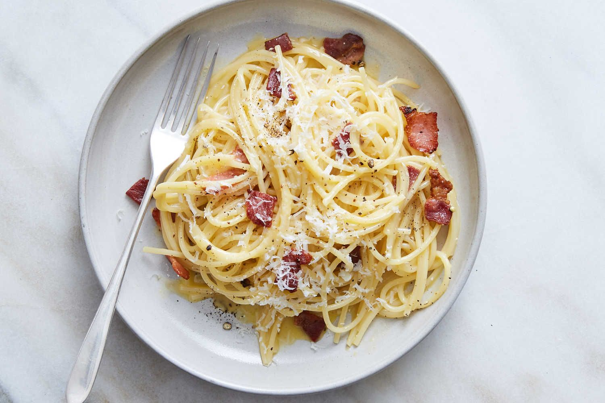

Карбонара

Ingredients
- Spagetti (100 grams)
- Bacon (100 grams)
- 4 (four) eggs
- Parmesan
- Black paper
- Olive oil
Инструкция
-
Подготовить ингредиенты. Бекон нарезать соломкой, чеснок продавить
через чеснокодавку или мелко нарезать. Сыр натереть на мелкой тёрке.
-
На сковороде разогреть растительное масло и на нём слегка обжарить
чеснок. Добавить бекон и хорошо обжарить.
-
В глубокую тарелку или миску выложить яичные желтки. Посолить,
поперчить и хорошо взбить. Добавить сливки и тёртый сыр и снова
тщательно перемешать.
-
Спагетти отварить до готовности в соответствии с рекомендациями
производителя на упаковке, очень важно не переварить их. Слить воду.
-
Выложить горячие спагетти в глубокую сковороду, добавить
яично-сливочный соус и хорошо перемешать. Сверху выложить жаренный
бекон и ещё раз всё тщательно перемешать.
-
Паста «Карбонара» готова, подавать её следует горячей, можно ещё
посыпать сверху мелко тёртым пармезаном.